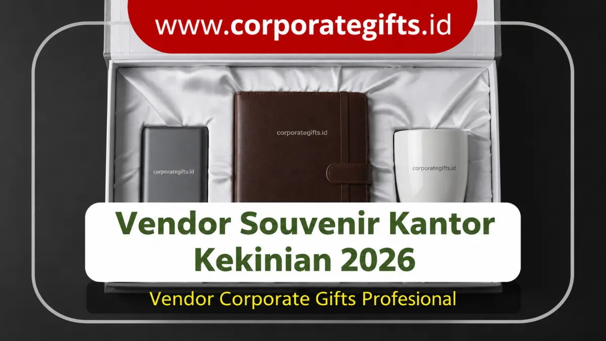

Corporate Gifts ID - Vendor souvenir kantor kekinian 2026 yang terpercaya adalah penyedia souvenir perusahaan dengan portofolio terverifikasi, penyediaan sampel fisik sebelum produksi massal, fleksibilitas kustomisasi lengkap (desain grafis, palet warna, teknik cetak logo, hingga packaging), transparansi harga tanpa biaya tersembunyi, serta timeline pengerjaan yang terikat jaminan SLA pasti. Kelima pilar ini memastikan bahwa setiap bingkisan berfungsi optimal sebagai instrumen branding strategis, bukan sekadar cenderamata seremonial biasa.
Di tahun 2026, konsep cenderamata kantor telah bertransformasi total. Perusahaan modern tidak lagi membagikan barang generik yang lekas dibuang. Sebaliknya, suvenir kini menjadi medium sentuhan personal untuk mengomunikasikan kultur kerja, memelihara retensi karyawan berprestasi, dan mempererat relasi kemitraan bisnis tingkat tinggi. Namun, realisasi ide cenderamata yang inovatif sangat bergantung pada kredibilitas vendor yang dipercaya memproduksinya.
Poin Kunci Pemilihan Vendor Souvenir 2026:
- Uji Sampel Fisik (Proofing): Wajib mengevaluasi sampel fisik produk sebelum menyetujui produksi massal partai besar.
- Spesifikasi Material Baku: Pastikan material memenuhi standar keamanan dan durabilitas (SUS 304 food grade, kulit PU, plastik ABS).
- Kelengkapan Layanan Kustomisasi: Vendor ideal mampu melayani grafir laser, UV printing, hingga custom hardbox busa presisi.
- Transparansi Faktur B2B: Kejelasan legalitas faktur pajak PPN/PPh untuk kelancaran administrasi keuangan korporat.
- Jaminan SLA Produksi: Kontrak kerja tertulis yang memuat garansi penggantian barang rusak atau keterlambatan jadwal.
Ciri-Ciri Vendor Souvenir Kantor Profesional
Agar divisi pengadaan tidak salah langkah, kenali lima karakteristik utama vendor corporate souvenir yang benar-benar kredibel:
- Berpengalaman dengan Portofolio Nyata: Vendor yang telah melayani beragam instansi BUMN, kementerian, dan korporat swasta memiliki katalog yang kaya, mulai dari seminar kit harian hingga gift set eksekutif VVIP.
- Kualitas Produk Teruji dengan Uji Sampel: Suvenir kantor wajib fungsional dan estetik. Vendor profesional selalu menyediakan fasilitas mockup digital serta sampel fisik sebelum produksi dimulai.
- Kemampuan Kustomisasi Menyeluruh: Menyediakan opsi kustomisasi lengkap pada produk, tali lanyard, kemasan gift box, hingga kartu ucapan berlogo resmi.
- Komunikasi Responsif dan Konsultatif: Customer service yang sigap memberikan rekomendasi solusi produk sesuai pagu anggaran dan tema event.
- Transparansi Skema Biaya: Rincian penawaran harga jelas sejak awal, mencakup ongkos cetak, kemasan, hingga biaya logistik tanpa biaya tersembunyi.
Jenis Vendor Souvenir Kantor Kekinian
Perusahaan dapat memilih mitra pengadaan berdasarkan skala volume dan tingkat eksklusivitas yang dibutuhkan:
- Vendor Online Marketplace: Praktis untuk pemesanan barang eceran atau kuantitas sangat kecil tanpa kustomisasi khusus.
- Vendor Custom dan Spesialis: Fokus pada pembuatan produk kustom berlogo dengan sentuhan desain unik untuk skala menengah hingga premium.
- Vendor Lokal / Pengrajin UMKM: Menawarkan keunikan produk handmade alami dan ramah lingkungan dengan sentuhan kearifan lokal.
- Vendor Corporate Souvenir Terintegrasi: Menyediakan solusi one-stop B2B gifting lengkap, mencakup kurasi paket eksklusif, manajemen packaging, pergudangan, hingga pengiriman multikota seperti layanan CorporateGifts.ID.
Cara Memilih Vendor Souvenir Kantor Kekinian
Enam langkah sistematis berikut memandu tim purchasing dalam menyeleksi mitra terbaik:
- Identifikasi Kebutuhan Program: Petakan apakah pengadaan ditujukan untuk branding promosi, perlengkapan seminar, atau apresiasi mitra direksi.
- Bandingkan Minimal Tiga Vendor (Tender): Evaluasi perbandingan rasio harga, portofolio klien, dan kualitas material yang ditawarkan.
- Verifikasi Rekam Jejak dan Testimoni: Telusuri reputasi vendor dalam ketepatan waktu pengiriman dan keakuratan hasil cetak.
- Ajukan Permintaan Sampel Fisik: Periksa langsung kehalusan bahan, kekuatan jahitan tas, atau ketahanan panas botol tumbler.
- Kunci Jadwal Timeline Pengerjaan (Timeline SLA): Pastikan tanggal pengiriman selesai minimal 5-7 hari kerja sebelum hari pelaksanaan acara.
- Periksa Syarat Garansi Penggantian: Pastikan adanya klausul penggantian unit apabila ditemukan cacat produksi atau kerusakan saat ekspedisi.

Rekomendasi paket souvenir kantor modern untuk kebutuhan branding perusahaan.
Rekomendasi Paket Souvenir Kantor untuk Tahun 2026
Empat kategori paket souvenir modern yang paling diminati perusahaan sepanjang tahun 2026 meliputi:
1. Paket Teknologi Pintar (Smart Tech Kit)
Sangat tepat bagi perusahaan berbasis teknologi, start-up, atau perbankan yang ingin menonjolkan citra modern dan efisien:
- Wireless Charger & Mini Powerbank: Praktis mendukung mobilitas tinggi para pekerja hybrid.
- Smart LED Tumbler: Menampilkan indikator suhu air secara digital dengan sentuhan futuristik.
- Desk Organizer Multifungsi: Menata rapi meja kerja sekaligus menyematkan branding logo secara permanen.
2. Paket Keberlanjutan Eksklusif (Premium Eco-Friendly)
Menggabungkan elegansi visual dengan komitmen pelestarian alam demi mendukung program ESG korporat:
- Tote Bag Kanvas Organik: Berstruktur tebal dan kokoh, menggantikan pemakaian tas plastik sekali pakai.
- Alat Tulis Serat Daur Ulang: Pulpen gandum (wheat straw) dan buku catatan daur ulang bersertifikasi FSC.
- Tumbler Stainless SUS 304: Menjaga hidrasi harian karyawan sembari menekan sampah botol kemasan.
3. Paket Eksekutif dan Direksi (Corporate Gift Set VIP)
Dikhususkan untuk momen serah terima jabatan (sertijab), pisah sambut dewan komisaris, atau penghargaan klien VVIP:
- Planner Hardcover Kulit PU: Dilengkapi grafir nama penerima dan pita pembatas halaman elegan.
- Pulpen Metal Rollerball: Memberikan bobot mantap dan kesan prestisius saat penandatanganan berkas resmi.
- Rigid Gift Box Eksklusif: Dilapisi busa potong presisi (die-cut foam) yang mengunci posisi barang secara mewah.
4. Paket Seminar Produktif (Modern Seminar Kit)
Solusi ideal untuk workshop korporat, FGD, atau pelatihan internal berskala ratusan peserta dengan fokus fungsionalitas dan efisiensi biaya.
Spesifikasi Bahan Souvenir Perusahaan 2026
Gunakan tabel acuan spesifikasi berikut sebagai panduan standar kualitas sebelum mengajukan pengadaan kepada vendor:
| Kategori Paket | Rekomendasi Material Utama | Teknik Branding Terbaik | Standar Kemasan |
|---|---|---|---|
| Eksekutif & VIP | Kulit PU Sintetis, Metal Stainless SUS 304 | Laser Engraving, Deboss / Foil Emas | Rigid Box Hardcover + Spon EVA Foam |
| Eco-Friendly | Kanvas Katun Organik, Bambu Alami, Wheat Straw | Sablon Plastisol / Waterbased Eco-Ink | Pouch Blacu Serut + Hangtag Kertas Daur Ulang |
| Smart Tech | Plastik ABS Matte Finish, Aluminum Alloy | UV Flatbed Full Color, Pad Printing | Custom Drawer Box + Window Display |
| Seminar Kit | Kertas Bookpaper 72 GSM, Spunbond 100 GSM | Sablon Presisi High-Density | Totebag Multifungsi dengan Resleting |
Tips Negosiasi dan Pengadaan dengan Vendor Souvenir
Untuk memperoleh kesepakatan harga dan kualitas terbaik, terapkan strategi pengadaan berikut:
- Sampaikan Dokumen Spesifikasi Detail: Lampirkan rincian ukuran, ketebalan bahan, file logo format vektor (AI/PDF), serta toleransi warna pantone.
- Pesan 1-2 Bulan Lebih Awal: Memesan jauh hari menghindarkan ongkos ekspedisi instan darurat dan memberi ruang revisi desain tanpa terburu-buru.
- Manfaatkan Diskon Skala Volume: Tanyakan batas undakan kuantitas (tiering MOQ) karena penambahan jumlah pesanan sering kali menurunkan harga satuan secara signifikan.
- Legalisasi Kontrak SPK B2B: Gunakan Surat Perjanjian Kerja (SPK) yang menegaskan batas waktu serah terima, ketentuan garansi barang rusak, serta syarat termin pembayaran.
FAQ tentang Vendor Souvenir Kantor Kekinian
Kesimpulan: Solusi Branding Jangka Panjang Perusahaan
Memilih vendor souvenir kantor kekinian 2026 yang tepat adalah fondasi kesuksesan strategi komunikasi korporat Anda. Cenderamata yang dirancang secara profesional akan terus digunakan oleh karyawan maupun klien, menghadirkan daya ingat merek yang positif dan bertahan lama.
Konsultasikan kebutuhan merchandise kantor Anda bersama CorporateGifts.ID. Kami siap menghadirkan simulasi mockup digital cuma-cuma, sampel fisik berkualitas, serta faktur pajak resmi untuk mendukung kelancaran pengadaan Anda.

Ditulis oleh: Arinda Zakia
Senior Corporate Gifting SpecialistSpesialis kurasi merchandise dan souvenir korporat di CorporateGifts.ID. Berpengalaman lebih dari 7 tahun dalam menyusun paket corporate gift fungsional untuk instansi BUMN, kementerian, perbankan, dan perusahaan multinasional.
Lihat Profil Lengkap & Panduan Lainnya